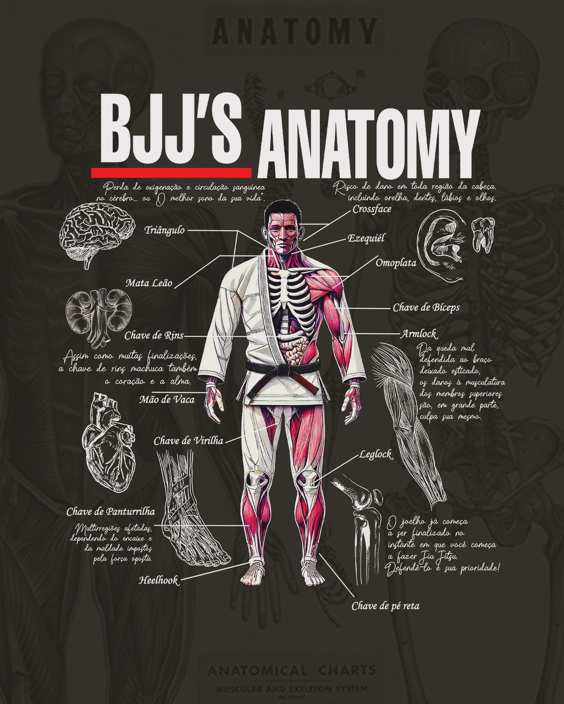

Muscle & Rolo
O melhor dos dois mundos: força e técnica
Musculação
Jiu Jitsu
Minha jornada
Beneficios da musculação
Aumento da massa muscular
Sensação de bem-estar (endorfina)
Ajuda no combate à ansiedade e à depressão
Acelera o metabolismo
Ver mais
Beneficios do Jiu jitsu
Alto gasto calórico (ajuda a secar)
Desenvolvimento de disciplina e autocontrole
Controle emocional sob pressão
Aprimora defesa pessoal
Fortalecimento do core (abdômen e lombar)

Ver mais